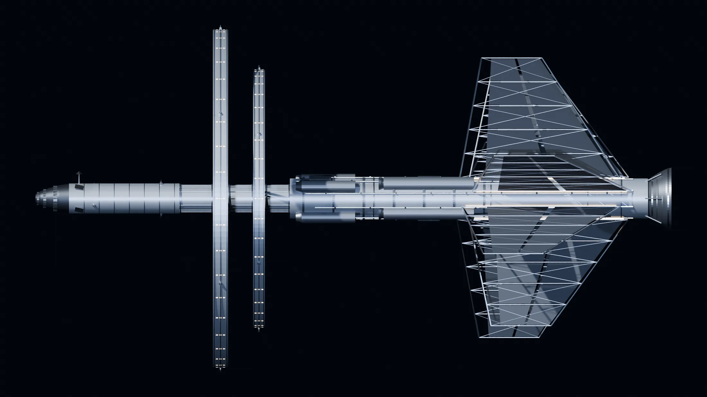

XUANSHU · HULL DESIGN v2.1
玄枢号
760 m 双环自转舰 · 22 层 / 91 分区 / 175 个一级气密单元 · 设计总览
口径：结构 / 面积 / 人数取自 飞船设计 v2.1 与 总账 v1→v3.3；总宽 406 m、总高 415.2 m 为当前模型实测包络，文档 v2.1 的 416 m 为含 6 m 结构包络的取整值。冲突时以总账页登记为准。
三段划分核心段不自转 · 双环反向 · 尾段 0 g
前部核心段0–172 m
前装甲 40 m + 核心段 132 m。A–D 四层：指挥、生活、作业、动力。舰桥稳定指向、机库对接、反应堆对称散热，因此这一段不做自转。
连接脊 S1–S3172–272 m
S1 40 / S2 30 / S3 30。3 段连接脊把核心段与双环、工业尾段串起来，兼作过渡气闸与主干管廊。
双环272–332 m
主环 T1–T6 六层居住与公共；农环 E1–E6 反向旋转，0.68–0.78 g 用于农业与低重力产业，抵消大部分角动量。
工业尾段332–760 m
I1–I3：制造、材料、推进、散热、燃料。I3-03 液滴散热器等效 186,000 m²，工作温度 1,200 K 为工况带上限。
关键系统四个决定全舰形态的数
自转重力2.18 / 2.16 rpm
主环中径 R188，1.0 g 需 ω=0.2284 rad/s；农环反向，两环角动量基本抵消，姿态控制只需要处理差值。
热管理12 GW 巡航 / 90 GW 峰值
主推进热走 D-03 + I3-03 独立回路，186,000 m² 液滴散热器按 12 GW 稳态核算（64.5 kW/m² @1,200 K）。舰务负荷另算：68 MW 电载荷，v3 因热泵泵功升为 105 MW。
生保与闭环175 个一级气密单元
91 个分区叠气密层 → 175 个一级单元；门表 98 段 / 1,487 樘；76 个避难角 / 2,280 m²。
逃生弃舰 4.4 min
8 组辐条气闸，2.4 m 净宽，12 人/次；环上最远 65.6 m / 77 s，T6 老幼 53.1 m / 59.0 s。
继续看每个页面都能从这里一步进入
设计全文v2.1 分章折叠，共 12 章
0. 口径标记210 字
本文每个关键条目后带标记，便于区分来源：
| 标记 | 含义 |
|---|---|
| 【沿】 | 直接沿用已有设定，原文不动 |
| 【新】 | 本次新定的设定（原档案没有，属于补全） |
| 【算】 | 由物理/工程假设推算，附推算依据 |
| 【冲】 | 与已有设定冲突，或 10 万年尺度上物理不成立，需要用户裁决 |
人物与设定冲突时，以已有设定为准；冲突集中列在 §8。
1. 总体定位2946 字
1.1 一句话
玄枢号是一艘 单程深空世代探索舰：外形是军舰，实际运行的是一个约 4000 人、三班制、双环自转、靠行星补给维持准闭环的 镇级社会。【新】
1.2 舰体尺度
| 项 | 数值 | 口径 |
|---|---|---|
| 总长 | 760 m | 【新】前装甲 40 m + 核心段 132 m + 三段连接脊 100 m（S1 40 / S2 30 / S3 30）+ 双环轴向 60 m（主环 30 / 农环 30）+ 工业尾段 428 m（含喷口） |
| 总宽 | 416 m | 【算】主环外径 404 m + 结构包络 12 m（v3 更正：原 412 m 沿用「外径 400 + 2 m 独立外壳」，环层几何算不下，见 §3.6） |
| 总高 | 416 m | 【算】同上，主环平面垂直于舰体纵轴 |
| 空载质量 | 3.6×10⁶ t | 【算】结构 0.62 Mt + 屏蔽 2.0 Mt + 设备与储备 0.98 Mt；屏蔽按居住区 10 t/m² 计 |
| 满载质量 | 6.9×10⁶ t | 【算】质量比 1.92，按 Δv≈0.045c、排气速度 0.07c 计（火箭方程） |
| 加压容积 | 0.92×10⁶ m³ | 【算】核心段 0.05 Mm³ + 主环 0.51 Mm³ + 农环 0.30 Mm³ + 工业段 0.06 Mm³ |
| 甲板数 | 22 张平面（A–D / S1–S3 / T1–T6 / E1–E6 / I1–I3） | 【新】 |
- 热负荷口径（v3.3 补，勿再误读）：本册 12 GW / 90 GW 都是主推进级热功率，走 D-03 + I3-03 独立回路与 186,000 m² 液滴散热器（1,200 K 工况带上限），不是舰务负荷；舰务按 68 MW 电载荷设计（v3 因热泵泵功升为 105 MW），排热面见
玄枢号_内部深化_v3.md§3.6，电平衡见其附 B-8。
1.3 三段的划分（关键结构决定）
全舰沿纵轴分三段，这一段划分是后面所有功能与编制的前提：
| 段 | 位置 | 是否自转 | 重力 | 内容 |
|---|---|---|---|---|
| 核心段（A–D 甲板） | 舰体前部 40–172 m | 不自转 | 0 g（推进时 0.35 g 轴向） | 原设 16 间舱室全在这里：舰桥、机库、医疗、反应堆、军械 |
| 双环段（T 环 / E 环） | 172–302 m | 自转，两环反向 | 主环 0.95–1.05 g（中径 1.00 g）；农环 0.68–0.78 g（中径 0.73 g） | 居住、行政、教育、市集、工坊、农业 |
| 工业尾段（I1–I3） | 302–760 m | 不自转 | 0 g | 制造、材料、推进、散热、燃料 |
- 为什么核心段不自转：舰桥要稳定指向、机库要对接、反应堆要对称散热，自转会让火控与对接全部变成动态解算。【新】
- 为什么主环外径 202 m（⌀404）：居住面 R178–198、中径 R188，1.0 g 需 ω=√(9.81/188)=0.2284 rad/s=2.18 rpm（在 2 rpm 舒适带上沿，略超 0.18 rpm 可接受）。外径由环层几何倒推：第 6 层楼面 R198 + 净高 3.3 m = 201.3 m，顶板兼作压力壳，取整 202 m，即 ⌀404 m；总宽/总高 = 404 + 两侧各 6 m 包络 = 416 m。环厚 6 层 × 3.3 m = 19.8 m。原「外径 200 / ⌀400 / 总宽 412」在 4 m 层距 + 3.3 m 净高下差 1.3 m 半径，v3 作废，推导见
玄枢号_内部深化_v3.md附录 B-1。半径再小转速就过高（中径 R160 就要 2.37 rpm，超过 2.2 rpm 舒适线），再大结构质量指数上升。【算】 - 为什么农环中径 140 m 且反向转：植物不需要 1 g，中径 R140 取 0.73 g，反算 ω=√(0.73×9.81/140)=0.2262 rad/s=2.16 rpm（r130–150 对应 0.68–0.78 g）；反向自转抵消主环角动量，避免整舰滚转。【算】
- 为什么核心段是 0 g 而舱室里还有上下铺：见 §5.4「值勤/休更双生活」——舰员在核心段值勤 14 天（0 g 睡袋铺位），休更期回主环 T4 的舰员休更区（1 g）。这一条把原设的「12 组上下铺」和镇级生活同时保住。【新】
1.4 人口
| 类别 | 人数 | 说明 |
|---|---|---|
| 在册舰员 / 公职 | 740 | 【新】有军籍或公职身份 |
| 常住居民 | 1,220 | 【新】含未成年 360、65 岁以上 264、非在岗 56 |
| 服务资产（克隆亚人） | 440 | 【沿】无公民权、无军籍、不列舰员名册 |
| 醒态合计 | 2,400 | |
| 休眠人口 | 1,600 | 【新】轮换休眠池，含跨代技能储备 |
| 在册总人口 | 4,000 |
年龄结构（醒态 2,400）：0–14 岁 360（15%）、15–24 岁 384（16%）、25–44 岁 720（30%）、45–64 岁 672（28%）、65 岁以上 264（11%）。【新】 性别比：女 1,236 / 男 1,164（51.5 / 48.5）。【新】 职业分布：在岗 1,720（72%），非在岗 680（28%）。在岗中舰员/公职 738、居民雇员 542、服务资产 440。【新】
1.5 设计寿命与翻修逻辑
| 项 | 数值 | 口径 |
|---|---|---|
| 结构设计寿命 | 120,000 年 | 【新】按「单次航行 10 万年 + 20% 余量」 |
| 大修周期 | 2,000 年 | 【新】全舰停推、环停转、分段更换外装甲与主管路 |
| 中修周期 | 200 年 | 【新】换热器、密封件、电缆、轴承 |
| 小修 | 连续 | 【沿】RM-04 机库 + I1 制造层 + 18 舷外作业长 |
| 不可更换部分 | 龙骨与主环承力环 | 【新】按 12 万年疲劳寿命设计，超期即「不可返航」 |
翻修逻辑：玄枢号没有船坞，翻修只能在飞行中完成。做法是把舰体做成 可分段拆换的模块：外装甲板、散热板、管路、电缆、舱壁板全部标准化，由 I1 制造层现场生产。龙骨与主环承力环是唯一不能换的部件，它们的寿命就是全舰寿命。【新】
2. 功能清单3240 字
每项写：用途 / 所在区域 / 容量 / 关键参数。区域名与平面图完全一致。
2.1 探索行星
| 项 | 内容 |
|---|---|
| 用途 | 恒星系抵近侦察、行星轨道勘测、登陆采样、资源与宜居性评估 |
| 区域 | C-01 机库（RM-04）、C-06 外部观测平台（RM-12）、C-08 舷侧气闸与对接环、C-09 EVA 装备间、A-02 观测舱（RM-07）、I3-03 散热桁架（观测基线） |
| 容量 | 穿梭艇 4 艘（2 艘可换装登陆舱）、无人探测器 36 具、EVA 同时 12 人 |
| 关键参数 | 单次行星驻留 90–400 天；登陆队 24 人；采样返回 8 t/次；轨道勘测分辨率 0.3 m |
2.2 休眠冷冻
| 项 | 内容 |
|---|---|
| 用途 | 跨代人口轮换、重症维持、危机储备、长途航段减耗 |
| 区域 | I2-04 原料仓旁设「休眠库」（见下注）、B-02 医疗舱（RM-03）复温位、C-02 生体维护舱（RM-05） |
| 容量 | 1,600 个休眠位（I2 段 1,520 + 医疗级 80） |
| 关键参数 | 舱温 −196 ℃；复温 6–14 天；单次最长连续休眠 400 年；每 40 年强制轮换 1/4 |
注：休眠库不在原设 16 间内，属新增，编号 I2-05 休眠库（平面图中单列）。
2.3 克隆
| 项 | 内容 |
|---|---|
| 用途 | 服务资产补员、组织与器官备件、基因库补员（不用于替代自然繁衍） |
| 区域 | C-02 生体维护舱（RM-05，3 座医疗级培养筒）【沿】；T5-S2 食品加工旁设「生体培育厂」（新增，96 筒） |
| 容量 | 医疗级 3 筒（器官/组织）；工业级 96 筒（服务资产，年出 48 具） |
| 关键参数 | 服务资产 S-05 型服役 8 年、C-06 型 20 年【沿】；出舱即成年外表【沿】；记忆擦写周期 2–6 年【沿】 |
2.4 辐射与基因修复
| 项 | 内容 |
|---|---|
| 用途 | 宇宙射线损伤修复、基因组稳定性监测、辐射病处置、配子与胚胎筛查 |
| 区域 | B-02 医疗舱（RM-03）、B-04 隔离检疫舱（RM-13）、T3-S3 门诊与康养、E1-S3 种子库（基因备份） |
| 容量 | 门诊 60 人次/日；基因修复舱 8 台；年筛查胚胎 400 枚 |
| 关键参数 | 屏蔽当量 10 t/m²（水/聚乙烯）；舱内年剂量 ≤ 5 mSv；基因库 12,000 份全基因组 + 60,000 枚冷冻胚胎 |
2.5 动力能源
| 项 | 内容 |
|---|---|
| 用途 | 主推进、全舰供电、生保与农业供能、应急 |
| 区域 | D-01 反应堆舱（RM-15）、D-03 主冷却与排热交换、D-04 燃料仓与加注、I3-01 主推进器、I3-02 磁流体泵组、I3-03 散热桁架 |
| 容量 | 舰务聚变堆 2×150 MWth（一主一备）+ 40 MWth 应急堆；主推进级（磁喷嘴）热功率 12 GW 巡航 / 90 GW 峰值；储能 8 GWh |
| 关键参数 | 电功率平均 68 MW、峰值 190 MW；巡航 0.045c；排气速度 0.07c；燃料 3.1×10⁶ t（D-He³） |
2.6 战斗
| 项 | 内容 |
|---|---|
| 用途 | 自卫、护航、接舷、舱段清剿 |
| 区域 | A-01 舰桥（RM-01，火控席）、C-05 储藏与军械库（RM-11）、C-01 机库（RM-04，挂弹位）、C-07 禁闭与审讯（RM-14，俘获处置）、C-04 训练舱（RM-10） |
| 容量 | 主炮 0（无炮塔）；点防 12 座；舰载机 4；接舷战队 2 支 48 人 |
| 关键参数 | 装甲带前向 3.2 m 复合；点防拦截半径 8 km；无护盾；战斗力定位「武装探索舰」 |
设计取向：玄枢号不是战舰。它的战斗能力只覆盖「遇到不明目标能自保、能登临检查、能被追击时撑到脱离」。真正的战斗力来自舰载机与接舷战队，而不是主炮。【新】
2.7 生命维持与闭环生态
| 项 | 内容 |
|---|---|
| 用途 | 空气、水、食物、废物闭环 |
| 区域 | D-02 废物处理间（RM-16）、E1–E6 农环、B-03 食堂（RM-09）、T5-S2 食品加工、T3-S4 礼堂与浴场 |
| 容量 | 4,000 人当量（含休眠者低耗） |
| 关键参数 | 空气闭环 99.7%、水闭环 99.2%、热量自给 86%（缺口靠行星采集）；农环总面积 73,872 m²，其中 E1–E4 生产种植面 47,847 m²（四层立体折算 191,388 m²），E5–E6 为土壤/授粉/缓冲/洗涤支撑面 26,025 m² |
2.8 制造与维修
| 项 | 内容 |
|---|---|
| 用途 | 备件自给、舰体修补、装备制造、大件吊装 |
| 区域 | I1-01 机加工厂、I1-02 增材制造厂、I1-03 电子与传感工坊、I1-04 备件仓、I2-01 冶炼与合金、I2-02 化工与聚合物、C-01 机库（修补臂 EQ-027） |
| 容量 | 年产能 4,800 t 结构件；增材 12 t/月；电子件自给 74% |
| 关键参数 | 原料来自行星采集与小行星；无法自产的只有高纯同位素与部分生物制剂 |
2.9 档案与知识传承
| 项 | 内容 |
|---|---|
| 用途 | 全舰档案、航行日志、技术手册、教育课程、口述史 |
| 区域 | A-03 超算机房（RM-08，EQ-047）、T1-S3 档案馆与图书馆、T1-S2 学园 |
| 容量 | 冷存储 4.2 PB；纸本备份 18 万册；三重异地副本（A-03 / T1-S3 / I1-04） |
| 关键参数 | 每 200 年全量校验一次；格式迁移每 500 年一次；口述史每代强制录制 |
2.10 通信与导航
| 项 | 内容 |
|---|---|
| 用途 | 星际通信、导航解算、星图维护、编队协同 |
| 区域 | A-01 舰桥导航台（RM-01，008 绯捌）、A-06 舰长与参谋室旁通信舱、A-07 传感器桅、A-03 超算机房 |
| 容量 | 激光通信 0.4 AU 内 12 Mbps；射电 40 AU 内 8 kbps |
| 关键参数 | 星图误差 < 0.02 角秒/千年；惯性导航 + 脉冲星定位双冗余 |
2.11 热管理
| 项 | 内容 |
|---|---|
| 用途 | 排出聚变与生保废热 |
| 区域 | D-03 主冷却与排热交换、I3-03 散热桁架、E6-S2 空气洗涤 |
| 容量 | 巡航稳态 12 GW ／ 峰值 90 GW 排热（两个层级，不是矛盾；散热面按巡航稳态核算） |
| 关键参数 | 液滴散热器 186,000 m² 等效；工作温度 1,200 K（工况带上限值、不是常态）、ε=0.90、单面计（投影面积）、F=0.61 → 64.5 kW/m²（唯一口径见 v3 §3.6）；舰务 103 MW 另走 500 K / 32,300 m²，不许与本回路混算；散热桁架是最大受弹面积 |
3. 系统设计9289 字
3.1 生命维持与闭环生态
空气：三回路——舱室回路（常压，O₂ 21%/N₂ 79%）、农业回路（CO₂ 富集 1,200 ppm）、工业回路（独立，不回流）。【新】 - 制氧：农环藻类与高等植物光合为主，电解水为辅（峰值/应急）。 - CO₂：分子筛 + 萨巴蒂尔反应，97% 回收；余量排入农环。 - 泄漏率：设计 0.03%/日；年补气 4.4 t，由行星冰与岩样热解补充。
水：四级循环——生活水、农业水、工业水、应急水。尿液/冷凝水 → 多级蒸馏 → 反渗透 → 紫外/臭氧。回收率 99.2%。【新】 - 储备：8,000 t（含消防与洗消），分布在 D-04 与 T5-S4。
食物：农环 6 层共 73,872 m²，其中 E1–E4 生产面 47,847 m²，四层立体栽培折算 191,388 m² 等效；热量产出 86%，蛋白 78%，微量营养素 71%。【算】缺口由行星采集（渔猎/采集/培养）补足。 - 日供：2,600 kcal/人；蛋白 78 g/人。 - 应急口粮：90 天全员份，存 T5-S4。
补给（准闭环的硬约束）：
| 项 | 内容 |
|---|---|
| 补什么 | 氘/氦-3（主）、水冰（次）、磷/钾/稀土等无法循环的微量元素、高纯同位素、生物制剂原料、密封件与催化剂前体 |
| 多久一次 | 每 100–300 年一次行星/小行星采集；燃料大补给每 2,000–3,000 年一次（气态巨行星） |
| 一次补多少 | 元素补给约 12,000 t；燃料补给约 60,000 t（够 2,000–3,000 年） |
| 补不到 100 年 | 正常，靠库存与回收；农环降 10% 产量，配给转「两荤一素」 |
| 补不到 300 年 | 警戒：磷/钾缺口显现，农环产量降到 70%，出生配额减半，休眠池扩容 |
| 补不到 600 年 | 临界：密封件与催化剂耗尽，空气泄漏率升到 0.1%/日，医疗备件靠 3D 打印代用，人口进入负增长 |
| 补不到 1,000 年 | 退化态：全舰转为「维持航行 + 保基因库」，社会退到配给制，探索任务事实上终止 |
这张表是全舰的「生存倒计时」，也是舰长与议会最大的政治筹码：谁能找到下一个补给点，谁就有合法性。【新】
废物：三线分离——可回收有机物（→ 堆肥/蛋白回收 EQ-042）、不可回收固体（→ 压实/外抛）、危废（→ 封存，不排）。医疗废物独立负压线，不复用为培养原料。【沿】
【冲】完全闭环在 10 万年尺度上不成立：任何闭合系统的熵只增不减，密封件、催化剂、微量元素必然单向损耗。所以玄枢号不是「闭环舰」，而是 准闭环 + 每 100–300 年一次行星补给。这条改写了「完全自给」的直觉，也是探索任务的真正动因。
3.2 能源
| 层级 | 配置 | 用途 |
|---|---|---|
| 主能源 | 2×150 MWth 舰务聚变堆（D-He³） | 生保、环转、制造与全舰供电，一主一备；主推进的磁喷嘴由独立聚变级直接驱动，热功率见 §3.3 |
| 备份 | 40 MWth 应急堆（D-D） | 主堆停堆时维持生保 + 环转 + 医疗 |
| 应急 | 8 GWh 储能 + 2 组 1.2 MW 燃料电池 | 30 分钟全舰应急；72 小时生保 |
| 取电 | 行星/小行星采集 D、He³、冰 | 每次补给支撑 200–300 年 |
- 燃料消耗：约 780,000 t 氘当量 / 10 万年【算】。这决定了玄枢号必须反复进入气态巨行星与冰卫星取料——探索不是目的，取料才是刚需，探索是取料的副产品。【新】
3.3 推进与姿态
- 主推进：磁约束聚变 + 磁喷嘴，比冲 2.1×10⁶ s，排气 0.07c。【算】
- 加速曲线：0.0015 g 持续 2.9 年达到 0.045c；巡航 0.045c；减速对称。
- 姿态：48 组姿控喷口（EQ-025）+ 4 组控制力矩陀螺；自转段用反向环 + 轴承配平。
- 10 万年里程：0.045c × 10⁵ yr ≈ 4,500 光年，覆盖猎户臂一段；计划访问 900–1,200 个恒星系。【算】
3.4 热管理
排热分两档，不是一个数【算】：
| 层级 | 数值 | 工况 | 时长 | 去向 |
|---|---|---|---|---|
| 巡航稳态 | 12 GW | 0.045c 匀速，主推进低功率维持 | 全程（约 9.5 万年） | 液滴散热器 186,000 m² |
| 峰值 | 90 GW | 紧急变轨、避碰、减速末段等高推重机动 | 小时级、累计短 | 散热器超发 + 相变蓄热缓冲 |
- 12 GW / 90 GW 都是主推进级（磁约束聚变 + 磁喷嘴）的热功率；舰务堆 2×150 MWth 的余热与全舰 68 MW 电载荷合计约 0.25 GW，占比不到 3%，已含在 12 GW 内。（v3.3 重算：双堆并联 233 MWth、105 MW 电、余热 128 MW，舰务总排热 0.23 GW，见
玄枢号_内部深化_v3.md§3.7 / 附 B-8。） - 散热面按 12 GW 巡航稳态核算：186,000 m² ≈ 64.5 kW/m² @1,200 K（ε=0.90、单面计、F=0.61，即 56.7 × 1.2⁴ × 0.549），与液滴散热器效率相符。1,200 K 是工况带上限值，不是常态；旧稿 385,000 m² / 31.1 kW/m² 是 1,000 K 口径，已作废（虽同为几何折减后的工程值）。舰务 103 MW 仍走 500 K / 32,300 m² 舱壁回路，与这条 1,200 K 回路不许混。90 GW 只能短时靠蓄热与超发顶住，不能进入长期热平衡——峰值机动的时长因此被热管理卡死，不是被燃料卡死。
- 主散热：液滴散热器（I3-03），等效 186,000 m² @1,200 K（工况带上限）。
- 辅散热：舱壁嵌入式 42,000 m² 低温回路。
- 口径交叉引用（v3.3 补）：12 GW 属主推进热，舰务按 68 MW 载荷设计，12 GW 不摊到人居风管、风口与 AHU。v3 的排热面核算见
玄枢号_内部深化_v3.md§3.6；因热泵泵功（300 → 500 K）要把舰务总电从 68 MW 提到 105 MW，两台 150 MWth 需并联常态运行（不再是「一主一备」），见 v3 附录 B-8。本册 §3.4 的 42,000 m² 辅散热面正是 500 K 回路要用的面（需 32,300 m²，余 5,500）。 - 脆弱点：散热桁架无装甲，是最大受弹面积；战损后必须降功率运行。
3.5 辐射防护
| 位置 | 屏蔽 | 年剂量 |
|---|---|---|
| 居住环 | 10 t/m² 水/聚乙烯夹层 + 2 m 月壤类压块 | ≤ 5 mSv |
| 核心段 | 6 t/m² + 局部 20 cm 铅硼 | ≤ 12 mSv |
| 工业尾段 | 4 t/m² + 分区 | ≤ 50 mSv（限时） |
| 反应堆舱 | 屏蔽层 + 负压 | 作业限时 200 h/年 |
- 航行方向：前向屏蔽加倍（迎流屏蔽），尾部靠距离与磁场偏转。
- 太阳耀斑：A-05 应急指挥所兼作「风暴掩体」，全舰可 6 小时内撤入。
3.6 结构分舱与气密
- 分舱：全舰 175 个一级气密单元【v3 订正】。v2.1 旧值「214 个独立气密舱段」无明细支撑，作废（原因：无法逐项核对，且与「一舱承 1 atm、半压 ≥15 min」判据对不上），明细见
分舱表_v3.csv。 - 最大单舱：I3-01 主推进器 3,200 m² × 3.2 m = 10,240 m³。v2.1 旧值「最大单舱容积 18,000 m³（食堂）」作废（原因：食堂 720 m² × 3.0 m = 2,160 m³，18,000 m³ 是环上一个 90° 扇区的量级，不是食堂）。
- 主环：每 30° 一道承压舱壁（v2.1 的 90° 在 60 s 逃生口径下不成立，见 v3 §7.6），单区失压不连锁。
- 环体与轴心：6 组承力辐条连接环体内缘（r 130）与核心段/S 段轴心，兼作应急通道与线缆槽；辐条本身不承载生活舱，失压可单独封闭。【新】
- 环层几何：主环 6 层为径向叠层——每层净高 3.3 m、轴向宽 18 m，居住面半径 178（T1）→ 198（T6）每层递进 4 m，环厚 6 × 3.3 = 19.8 m。外径推导：第 6 层楼面 198 + 净高 3.3 = 201.3 m，顶板兼压力壳（不再单设 2 m 外壳，顶板外贴 0.58 m 隔热/防碎片层），取整 外径 202 m = ⌀404 m；总宽/总高 416 m（404 + 两侧各 6 m 包络）。农环同构，每层宽 14 m，半径 130（E1）→ 150（E6），150 + 3.3 = 153.3，顶板兼壳取 外径 154 m = ⌀308 m。原「外径 200 / ⌀400 / 412 m / 农环 152」作废，理由：4 m 层距 + 3.3 m 净高与「198 + 2 m 独立外壳 = 200」自相矛盾，差 1.3 m。平面图上的「环带宽」即轴向宽，图上径向间距放大 5× 仅为便于阅读。【算】
- 核心段：A/B/C/D 各自独立加压，层间用 E1/E2/E3 电梯厅气闸隔断。【沿】
- 门型：G1/G2/G3/E/M/A 六级，沿用
舱室动线规划§3.2，不自创。【沿】
3.7 通信与导航
- 通信：激光主链路 + 射电备份；无超光速，与母文明的联系在出发 300 年后彻底中断（单程延迟 > 600 年）。【冲】这是设定上的硬边界：玄枢号是孤立的。
- 导航：脉冲星定位 + 光学星图 + 惯性冗余；星图由 022 贰拾贰 与 023 贰拾叁 双人互校。【沿】
3.8 舰载武备与防护
| 类 | 配置 | 位置 |
|---|---|---|
| 点防 | 12 座肩载点防枪座（EQ-016） | 环体外缘 6 + 核心段 4 + 尾段 2 |
| 近防 | 8 具震荡霰弹器（EQ-017） | 机库与气闸口 |
| 舰载机 | 4 架多用途艇（可挂 EQ-012 电磁轨道枪） | C-01 机库 |
| 接舷 | 2 支战队（00 / 07），48 人 | C-04 训练舱、C-08 气闸 |
| 装甲 | 前向 3.2 m 复合装甲带；环体 0.4 m 防碎片层 | A-07、环外壳 |
| 诱饵 | 6 组角反射器 + 2 组假目标 | I3-04 |
- 为什么主环不装甲：装甲会让环体质量翻倍、转速下降、结构应力爆表。环体只防碎片，战损时靠「停转—锁定—弃段」。【算】
前装甲带加宽后的校核（v2）
| 项 | v1（8×32 m） | v2（20×32 m） |
|---|---|---|
| 覆盖宽度 | 8 m（A 段左侧 1/4） | 20 m（全宽 32 m 的 62%，含传感器桅基座） |
| 面积 | 256 m²（图上记 220 m²） | 640 m² |
| 厚度 | 3.2 m | 3.2 m（不变） |
| 面密度 | 7.36 t/m² | 7.36 t/m²（不变） |
| 实体质量 | 1,618 t | 4,710 t（+3,092 t） |
| 穿透裕度 | 2× | 2×（不变） |
- 为什么加宽不加厚：穿透深度由「弹丸质量 × 速度² ÷ 材料汽化热」决定，与装甲板多宽无关。设计威胁定为亚毫米冰粒 @0.045c，汽化-侵彻估算穿透 1.6 m；取 3.2 m 即 2× 裕度。若把厚度提到 6.4 m，质量翻倍到 9,420 t，而威胁模型没有变——那是拿结构质量买心理安慰。【算】
- 多出来的 3,092 t 去哪了：占结构总量 0.62 Mt 的 0.5%，由 6 组承力辐条与核心段纵梁分摊，端部弯矩增量约 4%，在安全系数 2.5 内，不需要加梁。【算】
- 这块板不是主防护：对本舰真正的威胁（≥毫米级颗粒）装甲挡不住，主防护是 1,200 km 前向雷达 + 激光烧蚀 + 变轨规避三件套（§3.8 表、§3.3）。A-07 的实际职责是：①结构基座与迎流面；②低速碎片与舱外作业飞溅；③宇宙线屏蔽层的机械支撑；④再入/热冲击的第一道面。不要把「装甲很宽」误读成「可以硬扛」。【新】
- 宽度上限定在 20 m 而不是 32 m：A 段右侧 12 m 要留给观测舱（A-02）与超算（A-03）的舷外侧视野与散热面，全包会把这两间的外露窗口挡死。
3.9 行星探测与登陆
- 流程：远距观测（C-06）→ 轨道勘测（探测器）→ 无人采样 → 载人登陆（4 艇）→ 建立前哨（可 90 天自持）→ 资源采集。
- 登陆队：24 人（含 8 舷外作业、4 医疗、2 侦察）。
- 限制：不能在有生物圈的行星上长期驻留，避免双向污染；有生命迹象的行星只做轨道观测与无人采样。【新】
3.10 休眠冷冻
- 1,600 位，分 4 组轮换，每组 400 人 / 40 年。
- 用途：① 跨代技能传递（休眠的老技师在 200 年后复温带徒）② 危机储备 ③ 长途减耗。
- 风险：复温失败率 0.8%；每次轮换有 6–10 人死亡。【算】
3.11 克隆与基因库
- 医疗级：器官/组织培养（RM-05 三筒），为舰员提供自体兼容备件。
- 工业级：服务资产（96 筒，年出 48 具），沿用 S-05（8 年）/C-06（20 年）两型。【沿】
- 基因库：12,000 份全基因组 + 60,000 枚冷冻胚胎，存 E1-S3 与 I2-05 双备份。【新】
- 硬边界：克隆不得用于替代自然繁衍；全舰克隆人口占比上限 18%（现 11%）。【新】
3.12 医疗与辐射基因修复
- 三级：T3-S3 门诊（日常）→ B-02 医疗舱 RM-03（手术/复温）→ B-04 检疫 RM-13（生物隔离）。
- 基因修复：8 台修复舱，用自体干细胞 + 定向核酸酶，修宇宙射线造成的双链断裂；年处理 900 例。【新】
- 心理：030 叁零 心理慰疗师 + T3-S3 康养组，处理长期封闭环境的精神耗损。【沿】
3.13 制造与维修
- I1 制造层：机加工、增材、电子；I2 材料层：冶炼、化工、原料仓、休眠库。
- 备件策略：三级库存——舱内急件（72 h）、段级备件（1 年）、战略原料（100 年）。
- 自给率：结构件 96%、电子件 74%、生物制剂 41%、高纯同位素 0%（必须采集）。【算】
3.14 档案与知识传承
- 三重副本：A-03 超算（在线）、T1-S3 档案院（离线冷存）、I1-04 备件仓旁（深埋抗辐射）。
- 传承三件套：档案 + 师徒 + 仪式。档案保证不失真，师徒保证能上手，仪式保证有人愿意学。【新】
- 每 25 年一次「代际交接」：全体 18 岁登记、全体 60 岁移交岗位、休眠者复温做见证。
3.15 体育与泳池（T4-S5）
为什么只给 45° 而不是 90°：角度上勉强凑得出 360°（家庭丙 90 + 家庭丁 90 + 单身 90 + 体育 90 = 360°），但代价是青年工读区 0°、180 人全部并入单身住区——单身住区要装 340 + 180 = 520 人 / 5,372 m² = 10.3 m²/人，低于全舰最低线 14.9 m²/人，等于把一批 18–24 岁的人塞进比舰员值勤铺位还挤的空间。真正卡住的是面积不是角度：90° = 5,372 m² ≈ 280 人的住处，T4 人均会从 19.2 掉到 14.4 m²。45° = 2,686 m² 已能装下下面这套清单，所以取 45°。【算】
面积拆分（可用 2,506 m²，净高 2.9 m；v3 划 180 m² 给 T4-S4）
| 功能 | 面积 m² | 规格 | 净高需求 / 实有 2.9 m |
|---|---|---|---|
| 训练池池体 | 200 | 25 × 8 m，4 水道 × 2 m；水深 1.35 m（浅水教学 1.0 m 端） | 水面在甲板面下 0.15 m，上方净空 3.05 m ✔ |
| 池岸与救生通道 | 108 | 四周 1.5 m 宽防滑池岸 + 2 个救生台 | 2.9 m ✔ |
| 更衣、淋浴、卫生间 | 180 | 男/女/家庭三组，淋浴 12 位 | 2.6 m ✔ |
| 器械区 | 420 | 力量架 6、划船机 8、单车 10、自由重量区 120 m² | 2.6 m（含吊顶设备）✔ |
| 乒乓区 | 216 | 4 台，每台 9 × 6 m 含缓冲 | 2.5 m ✔ |
| 格斗与体操垫区 | 300 | 12 × 12 m 垫区 2 块 + 镜墙 | 2.9 m ✔（不做腾空翻） |
| 攀岩横墙 | 60 | 长 12 m × 高 3 m 横移墙（traverse），不做上方保护攀登 | 2.9 m ✔（顶绳需 6 m，✘） |
| 看台与集会区 | 220 | 可移动看台 120 座 + 站立 80（v3 由 400 降为 220，划 180 m² 给 S4）；兼体育课、舰内赛事 | 2.9 m ✔ |
| 门厅、器材库、水处理机房 | 210 | 池水处理机组、加药、监测 | 2.6 m ✔ |
| 通行、柱网、管井 | 592 | 环向主通道、结构柱、管线竖井 | — |
| 合计 | 2,506 | 其中体育功能净面积 1,914 m²（76%） |
做不了的项目，明确不做：篮球（7.0 m）、排球（7.0 m）、羽毛球（9–12 m）、五人制足球（4–6 m）——净高差 2–3 倍，不是「挤一挤」能解决的。要做标准球场只有一条路：把 T5 对应扇区的楼板挑空 3 层（9.9 m），代价是 T5 工坊少 2,686 m²、结构要多 4 道环向大梁。不做，理由：为一层体育把 T5 工坊挑空，等于拿三层的制造能力换一块球场，与 §3.13「补不到货还能撑多久」的优先级直接冲突。
位置理由
- 为什么在环上：离心重力把「上」定义成径向内侧，人在地板上跳、跑、落，和行星上一致；核心段 0 g 做不了负重训练，泳池在 0 g 下水面无法约束（会沿舱壁爬升），根本不能做。
- 为什么在 T4 而不是 T6：T6 是 1.05 g、条件更好，但已被贵族居所（156 人）、观景廊、仪典厅、上园占满，且那层是「展示面」，放公共泳池会直接冲撞三层社会的空间秩序。T4 是 1.01 g，本就最接近 1 g，对训练无实质影响。
- 环上做泳池的额外好处：自由液面是等势面（与环同轴的圆柱面），晃荡问题比直线加速下的矩形池小一个量级；代价是停转期间水会失重，所以规程规定「主环转速 < 1.0 rpm 持续 30 分钟即抽空泳池」，抽空 270 t 进 D-04 应急水储备，2 小时可完成。【新】
水的来源与循环（封闭生态里的硬约束）
- 池容：25 × 8 × 1.35 = 270 t。
- 不与农环共用——这是刻意分开的：农环（E1–E6）用 UV + 臭氧 + 生物过滤，水质标准是「可灌溉」，靠硝化菌群维持；泳池必须维持 0.5–1.0 ppm 余氯。氯会杀死农环的硝化菌与水产池的鱼贝，一旦串管，农环要 30 天以上才能恢复菌群。两套管路物理隔离，仅在 D-02 废物处理间接交汇（见下）。【算】
- 循环量：6 次/日 → 1,620 t/日。四段处理：毛发过滤 → 石英砂过滤 → 活性炭 → UV + 余氯。滤器反冲洗水 12 t/日 进 D-02 三线分离，不直排、不回农环。
- 蒸发损失：水面 200 m²，舱内 26 ℃ / RH 60%，按 0.08 kg/(m²·h) 计 → 16 kg/h ≈ 0.38 t/日，取 0.4 t/日。这部分水随环内大气走 E6-S2 空气洗涤的冷凝器回收，不是净损失。
- 补水来源：① 主来源 E6-S3 水处理的冷凝水回收（环内大气除湿，日产约 3 t，划 0.4 t 给泳池）；② 检修大修补水取 D-04 的 8,000 t 应急水储备，一次全换 270 t 占储备 3.4%；③ 每 5 年全换一次（矿物质与消毒副产物累积），换出的水经 D-02 处理后转农环灌溉，不排掉。
- 加热：维持 27 ℃，池面蒸发 + 围护散热约 25 kW，取 D-03 主冷却余热（90 ℃ 回路经板式换热器），年耗热约 219 MWh——相对 300 MWth 堆功率可忽略，但省掉一套电加热。【算】
- 人：救生 2 席（开放时段）、器械指导 4 席、水处理 2 席（三班轮值），共 8 岗，已计入 T4 常驻。【新】
- 容量核算：2,506 m² / 2,400 人 = 1.04 m²/人（净口径 0.98，仍高于 0.9 下限），按三班制分流、日均接待约 600 人次（泳池 4 水道 × 25 m 同时 16 人，日 8 小时周转约 190 人次；器械与垫区承担其余）。这是「够用但不宽裕」，与全舰 18.9 m²/人 的居住水平一致。
4. 人员编制4970 字
4.1 部门与人数
| # | 部门 | 人数 | 其中舰员 | 主要驻地 |
|---|---|---|---|---|
| 1 | 指挥与航行部 | 70 | 70 | A 甲板、S1 |
| 2 | 作战部 | 180 | 180 | A/C 甲板、T6-S3 |
| 3 | 舰务与安保部 | 110 | 110 | C 甲板、T3-S1 |
| 4 | 工程与损管部 | 140 | 140 | D 甲板、I 段 |
| 5 | 医疗与生体部 | 84 | 56 | B 甲板、T3-S3 |
| 6 | 生态与农务部 | 118 | 12 | E 环 |
| 7 | 制造与材料部 | 210 | 40 | I 段 |
| 8 | 民政与社会部 | 246 | 30 | T1、T2、T5 |
| 9 | 服务资产序列 | 440 | 0 | T6-S1、B 甲板 |
| 10 | 休眠管理组 | 22 | 16 | I2-05 |
| 11 | 轮训与后备 | 100 | 84 | T4 |
| 合计在岗 | 1,720 | 738 |
非在岗 680：未成年 360、65 岁以上 264、长期疗养/待岗 56。
4.2 岗位与人物对照（全 31 个编号）
口径说明：001–031 共 31 个编号槽位，其中 027、028 为保留缺口（无人物），029 已并入 030（同一人前后编号）。因此实有 28 位人物。【冲】详见 §8-1。
指挥与航行部（70）
| 编号 | 姓名 | 岗位（沿用原文） | 编位 | 班次 | 汇报 |
|---|---|---|---|---|---|
| — | （未建档） | 舰长 | A-06 舰长与参谋室 | 常值 | 对持有方议会负责 |
| — | （未建档） | 副舰长 / 航行官 | A-04 指挥预备室 | 三班 | 舰长 |
| CREW-008 | 绯捌 | 导航长 · 舰桥导航台 / 星图校对与航路解算 | A-01 舰桥导航台 | 三班 | 舰长 |
| CREW-012 | 拾贰 | 通讯与电子战官 · 舰桥左舷 / 信号情报与干扰 | A-01 舰桥左舷 → A-03 静默位 | 三班 | 舰长 |
| CREW-022 | 贰拾贰 | 传感阵列观测员 · 观测舱 / 星图与目标回波 | A-02 观测舱 | 三班 | 导航长 |
| CREW-023 | 贰拾叁 | 档案与超算维护官 · 超算机房 / 档案索引与符文演算 | A-03 超算机房 | 常值 + 待召 | 舰长（技术线） |
| CREW-002 | 霜柒 | 技术舰员 · 战术数据板操作员 / 战队编号 07 | A-01 舰桥数据席 | 三班 | 导航长 |
作战部（180）
| 编号 | 姓名 | 岗位（沿用原文） | 编位 | 班次 | 汇报 |
|---|---|---|---|---|---|
| — | （未建档） | 作战官 | A-04 指挥预备室 | 常值 | 舰长 |
| CREW-010 | 舞拾 | 武器官 · 舰桥火控席 / 射击诸元与弹药基数 | A-01 火控席 | 三班 | 作战官 |
| CREW-001 | 赤枢 | 原初体 / 近接战刃舰员 / 战队编号 00 | C-04 训练舱 / C-08 气闸 | 待命 | 作战官 |
| CREW-007 | 墨柒 | 战斗编制 / 近接战员 · 战队编号 07 | C-04 训练舱 / C-08 气闸 | 待命 | 作战官 |
| CREW-025 | 贰拾伍 | 登舰突击队长 · 接舷突入 / 舱段清剿 | C-04 训练舱 | 待命 | 作战官 |
| CREW-026 | 濯 | 战斗支援（术式）· 太空战场魔法师 / 舰载术式官 | C-04 训练舱（术式间） | 待命 | 作战官 |
| CREW-017 | 拾柒 | 训练教官 · 训练舱 / 近战收势与护卫队形 | C-04 训练舱 | 两班 | 作战官 |
| CREW-011 | 玄翎 | 战斗编制 · 战舞者（战前祭祀 / 贵族观演） | T6-S3 仪典厅 | 按仪典 | 作战部（名义）/ 持有方（实际） |
| CREW-003 | 绫叁 | 舰内礼仪与舱室勤务 / 折叠防护裙甲测试员 · 战队编号 03 | T6-S3 仪典厅 / C-04 | 按仪典 | 礼仪长（作战部） |
| CREW-004 | 澜肆 | 气密舱门礼仪与舷窗观测 / 流体梭纹长战裙甲测试员 · 战队编号 04 | C-08 舷侧气闸 / A-02 | 两班 | 礼仪长（作战部） |
舰务与安保部（110）
| 编号 | 姓名 | 岗位（沿用原文） | 编位 | 班次 | 汇报 |
|---|---|---|---|---|---|
| — | （未建档） | 舰务长 | T3-S1 中央市集（办公点） | 常值 | 舰长 |
| CREW-015 | 拾伍 | 安保宪兵长 · 舰内治安 / 禁闭室与门禁权限 | C-07 禁闭与审讯 | 常值 | 舰长 |
| CREW-020 | 贰拾 | 宪兵 · 近接拘捕员 / 无武器拘捕与押解 | C-07 → 全舰巡查 | 三班 | 安保宪兵长 |
| CREW-014 | 拾肆 | 后勤军械官 · 军械库 / 弹药配给与装备台账 | C-05 军械库 | 两班 | 舰务长 |
| CREW-018 | 拾捌 | 机库地勤与舷外作业长 · 机库 / EVA 与舰体外部作业 | C-01 机库 | 三班 | 舰务长 |
| CREW-021 | 贰壹 | 长程侦察员 · 外部观测平台 / 远距目视与光学记录 | C-06 外部观测平台 | 两班 | 舰务长（作战协同） |
工程与损管部（140）
| 编号 | 姓名 | 岗位（沿用原文） | 编位 | 班次 | 汇报 |
|---|---|---|---|---|---|
| — | （未建档） | 总工程师 | D-01 反应堆舱（工程办公） | 常值 | 舰长 |
| CREW-016 | 拾陆 | 动力工程师 · 反应堆舱 / 聚变堆芯与配电 | D-01 反应堆舱 | 三班 | 总工程师 |
| CREW-009 | 零玖 | 损管长 · 全舰损管序列 / 失压与火灾应急处置 | 全舰机动（D-02 为基点） | 三班 | 总工程师 |
| CREW-019 | 拾玖 | 损管工程师 · 破拆与爆破 / 废物处理间事故处置 | D-02 废物处理间 | 三班 | 损管长 |
医疗与生体部（84）
| 编号 | 姓名 | 岗位（沿用原文） | 编位 | 班次 | 汇报 |
|---|---|---|---|---|---|
| — | （未建档） | 医疗长 | B-02 医疗舱（主任位） | 常值 | 舰长 |
| CREW-013 | 拾叁 | 临床医官 · 医疗舱 / 舰内外科与复温 | B-02 医疗舱 | 三班 | 医疗长 |
| CREW-024 | 贰拾肆 | 临床护理与检疫官 · 隔离检疫舱 / 护理与生物防护 | B-04 隔离检疫舱 | 三班 | 医疗长 |
| CREW-030 | 叁零 | 舰载心理慰疗师 | T3-S3 门诊与康养 | 两班 | 医疗长 |
民政与社会部（246）
| 编号 | 姓名 | 岗位 | 编位 | 班次 | 汇报 |
|---|---|---|---|---|---|
| CREW-031 | （待命名） | 外访与民政联络官【新，待确认】 | T1-S4 司法与登记处 | 常白 | 民政长 |
031 现状：仅有参考图 9 张与服装机甲化概念稿，无姓名、无岗位、无编号定名（编号目录仍为
031_待命名）。本表给的是我方新拟岗位，用户可改。
服务资产序列（440）
| 编号 | 姓名 | 岗位（沿用原文） | 编位 | 归属 |
|---|---|---|---|---|
| CREW-005 | 栖伍 | 上层阶级专属服务型克隆亚人 · 资产编号 05 | T6-S1 贵族居所 | 持有方调度 |
| CREW-006 | 伴陆 | 陪伴型号服务克隆亚人 · 资产编号 06 | T6-S1 贵族居所 | 持有方调度 |
其余 438 名服务资产不逐一建档，按型号（S-05 起居 260 / C-06 陪伴 120 / 其他 60）编组。
027 / 028 空位性质
结论：缺口待建，不是已撤销。 两个编号在档案库中从未建档，也没有撤销记录，因此按「缺口」处理，编制表留空并标出预期职能：
| 编号 | 状态 | 预期职能（供补人时参考） | 建议归属 |
|---|---|---|---|
| CREW-027 | 缺口待建 | 生体维护 / 克隆培育方向 —— 现有 28 人里没有一人负责 96 筒工业级培育厂，这是编制表上最大的真空 | 医疗与生体部 |
| CREW-028 | 缺口待建 | 生态农务方向 —— 现有 28 人里没有一人在农环任职，118 人的农务部全靠 NPC | 生态与农务部 |
舰长（TBD，未建档，待用户指定）
舰长在编制表里单列一行，状态 TBD，不硬塞给任何已有角色。
已有 28 人中最匹配的三位，供挑选：
| 候选 | 为什么匹配 | 风险 |
|---|---|---|
| CREW-008 绯捌（导航长） | 唯一掌握星图与航路解算的人；舰长的核心职责就是「决定去哪、能不能到」，导航长天然具备这项判断力；文中已有「她画错星图会连累几万人」的重量感 | 缺战斗与政治经验；对贵族议会的博弈没有描写 |
| CREW-009 零玖（损管长） | 全舰唯一「救过整条船」的岗位；10 万年尺度上，舰长最重要的事故处置而非开火；损管长的权威来自一次次把船从失压里拉回来 | 偏技术执行，缺外交与仪式职能（玄枢号舰长要主持代际交接与葬礼） |
| CREW-001 赤枢（原初体 / 战队 00） | 战斗力与威望最高，全义体化，能扛住 10 万年的肉体损耗；原初体身份对「原初一代」有天然号召力 | 001 现有设定是「单独任务编制、不受常规指挥链约束」，让他当舰长会消解这个特殊性 |
我的倾向：008 绯捌 最适合做「航行决策型舰长」，001 保持特勤不进军政。但这一条完全由你定。【新】
4.3 班次与轮值
| 班次 | 时段 | 覆盖 |
|---|---|---|
| 甲班 | 08:00–16:00 | 指挥、作战、工程、医疗主班 |
| 乙班 | 16:00–24:00 | 同上，人数 80% |
| 丙班 | 00:00–08:00 | 最小值守，人数 55% |
| 常值 | 全时 | 舰长、总工程师、安保宪兵长、医疗长 |
| 待命 | 15 分钟集结 | 战队 00 / 07、损管、接舷 |
- 值勤 14 天 / 休更 14 天：核心段 0 g 岗位采用这个周期，休更期回 T4-S3 单身住区（1 g，其中 160 间单人舱专供值勤舰员休更）。这是原设「居住舱 12 组上下铺」能服务 738 名舰员的原因。【新】
5. 社会结构与制度2216 字
5.1 三层社会（沿用已有设定）
| 层 | 人数 | 权利 | 来源 |
|---|---|---|---|
| 持有方（上层阶级 / 贵族） | 约 36 | 舰体所有权、议会席位、私人配额、服务资产调度权 | 【沿】011 为贵族起舞、005/006 专属服务 |
| 公民（舰员 + 居民） | 1,924 | 公民权、选举权、生育许可申请权、离舰权（实际无舰可离） | 【新】 |
| 服务资产（克隆亚人） | 440 | 无公民权、无军籍、无拒绝权、不得离舰、记忆可擦写 | 【沿】005/006 原文 |
【冲】这不是一个「正常」的社会。它是一个把不平等写进生物学的社会：440 人从出生就被设定 8 年或 20 年的寿命，到期回收、编号续用。用户要求「正常生存与延续」，而现有设定自带这套制度——我按既有设定保留，并把它当成本设计最大的道德债务与社会风险源，不粉饰、不洗白，也不擅自废除。
5.2 治理
- 形式：三层议会制。
- 持有方议会（36 席，终身）：掌握舰体、航线否决权、预算。
- 公民议会（120 席，按环区选举，任期 6 年）：掌握民政、教育、配给、司法。
- 服务资产事务局（12 席，由持有方与公民议会共同指派）：管理资产的生产、分配、回收——资产本身无席位。
- 执行：舰长对两议会负责；部门长对舰长负责；环区长对民政部负责。
- 僵局：持有方可否决公民议会，公民议会可否决预算；两者都僵住时，由「航行安全条款」接管——舰长在航危状态下有 72 小时独断权。
5.3 法律与纠纷
- 法源：《玄枢宪章》（出发时冻结，修正需两议会 2/3）+ 舰规（部门可修）+ 判例（T1-S4 登记）。
- 三级裁决：环区调解 → 司法庭（T1-S4）→ 公民议会终裁。涉及持有方的案子直接进终裁。
- 刑罚：工时扣减 → 配给降级 → 禁闭（RM-06，≤30 日）→ 长期羁押（RM-14）→ 强制休眠（≥100 年，事实上的流放）。
- 没有死刑：在 4,000 人的封闭社会里，处死一个人是纯粹的资源损失；最重的刑罚是「让你睡过去，醒来时认识的人都死了」。【新】
5.4 教育
- 学园（T1-S2）：6–18 岁，12 年制；课程三大块——活下来（生保/损管/急救）、做出来（制造/农务）、说得清（档案/法律/历史）。
- 师徒制：18 岁起跟岗 4 年，师傅签字才能独立值班。
- 成人教育：每 25 年一次「代际交接」，60 岁者必须带出 1 名接班人才可退。
- 服务资产：不入学园，走植入式培训模块（可随记忆擦写重写）。【沿】
5.5 医疗
- 全覆盖：公民与资产都享有基础医疗（资产是「资产维护」，不是权利）。
- 分级：T3-S3 门诊 → RM-03 医疗舱 → RM-13 检疫。
- 心理：长期封闭环境的核心风险是「舱室精神病」，030 叁零 的康养组是常规编制，不是福利。【沿】
5.6 繁衍与婚配
- 生育许可制：每年 96 个出生配额，按基因配对委员会打分分配。
- 配对规则：禁止三代以内血亲；优先跨环区配对；对携带隐性致病基因者提供胚胎筛查。
- 婚配自由，但生育不自由——这是 4,000 人封闭社会的必然代价。【新】
- 服务资产：生殖机能按批次关闭，不参与繁衍。【沿】
5.7 丧葬与仪式
- 物质回收葬：碱性水解 → 骨灰压制成「记忆砖」→ 嵌入 T1-S3 档案院外墙；名字刻入档案墙。
- 仪式：B-06 仪典静室（小规模）+ T6-S3 仪典厅（全舰级）；战舞（011 玄翎）在阵亡者送别与出阵前各跳一次。【沿】
- 每 25 年代际交接时，全体向档案墙行礼一次。
5.8 经济与物资分配
- 双轨：基本配额（生存权，人人有，含资产）+ 贡献点（劳动/技能/服役换，可兑换非必需品）。
- 持有方另有「私产配额」，不进入公共账。
- 无货币：封闭社会里货币会退化成配给券，不如直接记账。【新】
- 稀缺品：新鲜果蔬、私人空间、休眠位优先级、生育配额。
5.9 跨世代的知识与权威传承
- 档案（不失真）+ 师徒（能上手）+ 仪式（愿意学）三件套。
- 权威来源：不是年龄，是「带出过几个能独立值班的人」。60 岁未带出接班人者，权威自动降级。
- 休眠者复温后 6 个月内不得担任决策岗——他们对社会的记忆已经过期。【新】
5.10 异常与叛乱
| 级别 | 触发 | 处置 |
|---|---|---|
| 一级 | 个体违规、小规模冲突 | 环区调解 + 门禁降权 |
| 二级 | 组织性抗命、罢工、破坏 | 宪兵介入（015/020）、E1–E3 停运、分区封锁 |
| 三级 | 武装叛乱、夺取关键舱段 | 舰长 72 小时独断权、战队 00/07 出动、D 段与 I 段断连 |
| 特殊 | 服务资产集体异常（如 011 式「设计外进化」） | 医疗部评估 → 事务局决定「回收或观察」，这一步是本舰最黑的制度 |
6. 10 万年尺度上的机制1037 字
6.1 世代更替
- 25 年一代，10 万年约 4,000 代。【算】
- 每代 96 人出生，人口稳定在 2,400±5%。
- 每 25 年一次代际交接：18 岁登记、60 岁移交、档案封存。
6.2 休眠轮换
- 1,600 位，4 组，每组 400 人 / 40 年。
- 用途：跨代技能传递、危机储备、减耗。
- 风险：每次轮换死亡 6–10 人；复温失败率 0.8%；400 年后复温者的社会记忆全部过期。
6.3 克隆的使用边界
| 允许 | 禁止 |
|---|---|
| 服务资产补员 | 替代自然繁衍 |
| 器官/组织备件 | 复制现役舰员（身份冲突） |
| 基因库补员（胚胎级） | 无限制扩增某一基因型 |
- 克隆人口上限 18%（现 11%）。超过这条线，基因单一化不可逆。【新】
6.4 基因漂移防控
- 有效群体 Ne ≈ 700【算】。每代近交系数增量 ΔF=1/(2Ne)=0.00071；若不干预，4,000 代累计 F→1。
- 干预：每 200 年从基因库回注 40 份「祖先系」配子，把 F 压回 <0.006。
- 监测：每代全基因组测序抽检 200 人；隐性致病基因频率 >3% 即启动配对限制。
- 结论：只靠 2,400 人自然繁衍撑不住 10 万年；必须靠基因库 + 配对管制 + 每 200 年回注。【算】
6.5 人口稳定策略
- 目标区间 2,280–2,520。
- 三个调节阀：出生配额（快，1 代见效）、休眠位（中，10 年）、移民/外派（慢，需行星基地）。
- 危机下限：1,600（全舰最低可维持生保与航行的人数）。
6.6 社会动荡的预防
- 需求兜底：基本配额不可剥夺，饿不死人。
- 层级流动：贡献点可换休眠位与私人空间，底层有上升通道。
- 仪式黏合：代际交接、丧葬、出阵战舞，把「我们是一条船」变成可重复的身体记忆。
- 门禁物理化：015 的门禁权限体系让「有想法」和「能做到」之间永远隔一道门。
- 信息可控：档案院有分级阅览；但不删档——删档会让下一代重新犯同样的错。
- 记忆擦写的双刃：对服务资产是压制工具，也是本舰最大的道德债务；一旦被公民知晓其规模，就是三级叛乱的引信。【新】
7. 矛盾与取舍802 字
| # | 冲突 | 两边 | 我的选择 | 代价 |
|---|---|---|---|---|
| 1 | 完全闭环 vs 熵增 | 自给自足 / 物理不可能 | 准闭环 + 行星补给 | 必须每 100–300 年找到可采资源；找不到就是全舰危机 |
| 2 | 基因多样性 vs 舱容 | 大群体 / 舰体有限 | 2,400 醒态 + 12,000 份基因库 + 配对管制 | 生育不自由；每 200 年强制回注 |
| 3 | 克隆补员 vs 基因单一化 | 人力缺口 / 多样性 | 克隆上限 18%，只用于服务资产与备件 | 服务资产永远短缺，底层劳动强度高 |
| 4 | 1 g 重力 vs 舰体刚性 | 正常生活 / 结构强度 | 旋转环，环体不装甲 | 环是最大结构弱点，战损只能弃段 |
| 5 | 战斗力 vs 民用城镇 | 军舰 / 家园 | 武装探索舰（点防 + 舰载机 + 接舷） | 打不过正规战舰，只能跑 |
| 6 | 贵族制 vs 社会稳定 | 沿用设定 / 公平 | 保留贵族制，用配额与仪式缓冲 | 长期不公；记忆擦写是定时炸弹 |
| 7 | 休眠 vs 社会连续性 | 跨代传承 / 时代断层 | 轮换休眠，复温者 6 个月不得决策 | 每次轮换都有一批「活在过去的人」 |
| 8 | 超长寿命 vs 代际更新 | 经验积累 / 上升通道 | 强制 60 岁移交岗位 | 老技师的价值被制度性打折 |
| 9 | 探索 vs 取料 | 科学 / 生存 | 取料优先，探索是副产品 | 遇到「好看但没资源」的星系只能路过 |
| 10 | 孤立 vs 求援 | 独立性 / 无外援 | 接受单程 | 出发 300 年后与母文明彻底失联 |
8. 与已有设定的冲突清单（需用户裁决）1274 字
| # | 冲突 | 已有设定原文 | 本文处理 |
|---|---|---|---|
| 1 | 「31 位」与实际人数 | 编号 001–031 共 31 槽 | 027、028 保留缺口无人物；029 并入 030。实有 28 人（含 031）。若 027/028 需补人，告诉我。 |
| 2 | 岗位口径互斥 | manifest.json 写 008「编制未指定」、009「近距突击」、010「宴舞表演/服务克隆亚人」、012「人形计算机/非战斗」；而 character.json 与人物介绍写 008 导航长、009 损管长、010 武器官、012 通讯与电子战官 |
以 character.json + 人物介绍为准（较新、且与 RM 舱室对应）；manifest 视为旧口径，未改动原文件 |
| 3 | 舱室容量 vs 镇级人口 | RM-02 居住舱「12 组上下铺」、RM-09 食堂「峰值 40 人」、舱室动线规划 称 RM-09 为「全舰唯一高密度聚集点」 |
原设 16 间全部保留原名/原编号/原容量/原邻接，但其语义改为「核心段」；镇级人口住在新增双环。RM-09 改为「核心段唯一聚集点」。【冲】注记要求：04_舱室与舰体\舱室动线规划.md 原文不修改；本设计在引用该句时一律写成「核心段唯一高密度聚集点（原设称『全舰唯一』，沿革见《玄枢号_飞船设计_v1》§8-3）」，保留历史口径与改动原因 |
| 4 | 「正常自我维持社会」vs 服务克隆制度 | 005/006：8 年/20 年寿命、记忆擦写、无公民权、到期回收 | 保留，不洗白；列为 §5.1 的制度性代价与 §6.6 的最大风险源 |
| 5 | 10 万年完全闭环 | 原设未提闭环率 | 判定物理不成立，改「准闭环 + 行星补给」，并在 §3.1 说明 |
| 6 | 核心段 0 g vs 原设生活细节 | 原文有盥洗排队、长桌、上下铺等 1 g 生活描写 | 用「值勤 14 天 / 休更 14 天」双生活解释：核心段值勤期 0 g，生活回主环 |
| 7 | 007「07」与 002「战队编号 07」重复 | 007 档案已自标「待确认」 | 判定为同一支第七战队：002 技术席 + 007 近接战员 |
| 8 | 031 无岗位 | 仅有参考图与服装概念 | 新拟「外访与民政联络官」，待用户确认或改 |
| 9 | 037 服饰概念表 |
用户提到「网页仓库有服饰概念表」，但 07_发布产物 只有 data.js/gear.json/rooms.json，无 world/服饰表 |
以 character.json 的服装描述 + 031 概念稿为准；若另有仓库请给路径 |
| 10 | 舰长空缺 | 31 人里无人任舰长 | 舰长为未建档 NPC；若要把舰长落到某位已有角色，请指定 |
9. 待确认 / 后续773 字
- §8-1：027/028 是否补人。
- §8-8：031 的姓名与岗位。
- §8-10：舰长是否启用已有角色。
- 是否把「服务资产制度」作为主线矛盾推进（会牵动 005/006/011 的剧情）。
- 平面图 v2 已出（
deckplan.html+总览图.svg），91 个分区与附录 A 逐条一致（附录 A 即命名权威）；每层另标竖向动线（竖井位置、连通关系、疏散下行路径），见平面图每张图上方「竖向：」一行。如需增删分区，先改附录 A 再改图。 - ~~核心段 A–D 面积利用率偏低~~ 【v2 已落】：A-07 前装甲带改为 20×32 = 640 m²，D-04 燃料仓改为 20×30 = 600 m²。A 层利用率 40.8% → 50.7%，D 层 40.2% → 48.8%。剩余差额是走廊、竖井与屏蔽层，不再压缩（再压就要动主通道宽度）。装甲厚度校核见 §3.8 末。
- ~~人口级体育空间缺位~~ 【v2 已落】：T4-S4 青年工读压到 45°（180 人 / 2,686 m² / 14.9 m²），划出 45° 作 T4-S5 体育与泳池（v3 后 2,506 m²）。v3 更正：T4-S4 2,686→2,866、T4-S5 2,686→2,506（内部划转 180 m²，补齐 T4-S4 净口径 14.93）。净高 2.9 m 下球类不可行，改为训练池 + 器械 + 垫上项目；面积拆分、水循环、位置理由见 §3.15。
- S1–S3 分区合计仅 240 m²（包络 720–960 m²），差额是轴承环体与旋转接头，不是浪费；已把该口径写进平面图注记「轴承环体 / 旋转接头 / 结构」，避免被读成空白面积。
附录 A：22 层分区总表（91 区）9779 字
本表由
deckplan.html的数据层直接导出，共 91 个分区、分区合计 229,118 m²、常驻 551 岗、居住 2,400 人、公共（含指挥）57,539 m²（25.1%）。表是分区命名的唯一权威：平面图、静态总览图、人物落位均以此为准，改名前先改这里。v3 环径口径（2026-11-10 更正）：主环外径 202 / ⌀404 / 总宽总高 416 m；农环外径 154 / ⌀308 m。推导：第 6 层楼面 198 + 净高 3.3 = 201.3，顶板兼作压力壳（外贴 0.58 m 隔热/防碎片层），取整 202；总宽 = 404 + 两侧各 6 m 包络 = 416。农环同构 130 + 5×4 = 150，+3.3 = 153.3，取整 154。分区面积不变（面积按 4 m 层距 R178–198 算出），故本表数值不动，只更正外壳口径。原 200 / ⌀400 / 412 及农环 152 作废。
A 甲板 · 指挥层
包络 4,224 m² ｜ 分区 2,142 m² ｜ 7 区 ｜ 常驻 15 岗 ｜ 居住 0 人 ｜ 0 g
| 编号 | 分区名 | 类别 | 面积 m² | 常驻岗 | 居住 | 职能 |
|---|---|---|---|---|---|---|
| A-07 | 前装甲带与传感器桅 | 结构 | 640 | 0 | — | 3.2 m 复合装甲带贯穿全宽（20×32 m，面密度 7.36 t/m²，实体 4,710 t）；设计威胁为亚毫米冰粒 @0.045c，汽化-侵彻估算穿透 1.6 m，厚度裕度 2×；更大颗粒靠 1,200 km 前向雷达 + 激光烧蚀 + 变轨规避 |
| A-01 | 舰桥 | 指挥 | 432 | 6 | — | 航行指挥、火控、通讯、导航四席；01 区唯一对外观察口 |
| A-02 | 观测舱 | 指挥 | 216 | 2 | — | 光学与射电观测、星图目视校对 |
| A-03 | 超算机房 | 作业 | 384 | 2 | — | 战术数据链、档案索引、导航解算 |
| A-04 | 指挥预备室 | 指挥 | 180 | 3 | — | 作战官与副舰长待机、简报、战前推演 |
| A-06 | 舰长与参谋室 | 指挥 | 140 | 2 | — | 舰长办公、两议会联络、密级档案阅览 |
| A-05 | 应急指挥所 | 指挥 | 150 | 0 | — | 装甲堡垒，太阳耀斑与战损时的备用指挥位；可容 12 人 72 小时 |
B 甲板 · 生活层
包络 4,224 m² ｜ 分区 2,060 m² ｜ 6 区 ｜ 常驻 37 岗 ｜ 居住 24 人 ｜ 0 g
| 编号 | 分区名 | 类别 | 面积 m² | 常驻岗 | 居住 | 职能 |
|---|---|---|---|---|---|---|
| B-01 | 居住舱 | 居住 | 480 | 24 | 24 | 12 组上下铺 = 24 铺位；值勤 14 天轮换，非家属宿舍 |
| B-02 | 医疗舱 | 医疗 | 360 | 3 | — | 舰内外科、复温、基因修复舱 8 台 |
| B-03 | 食堂 | 公共 | 720 | 4 | — | 长桌 + 后区盥洗/卫生处理/织物再生；峰值 40 人 |
| B-04 | 隔离检疫舱 | 医疗 | 180 | 2 | — | 生物隔离、检疫、负压 |
| B-05 | 舰员休更与家属联络舱 | 公共 | 200 | 4 | — | 休更期舰员与家属通话、短时团聚 |
| B-06 | 仪典静室 | 公共 | 120 | 0 | — | 小型告别式、默哀、私人悼念 |
C 甲板 · 作业层
包络 4,224 m² ｜ 分区 2,440 m² ｜ 9 区 ｜ 常驻 25 岗 ｜ 居住 0 人 ｜ 0 g
| 编号 | 分区名 | 类别 | 面积 m² | 常驻岗 | 居住 | 职能 |
|---|---|---|---|---|---|---|
| C-01 | 机库 | 作业 | 780 | 8 | — | 4 艘穿梭艇 / 2 艘可换装登陆舱 / 36 具探测器；修补臂 EQ-027 |
| C-02 | 生体维护舱 | 医疗 | 300 | 2 | — | 3 座医疗级培养筒：器官与组织备件 |
| C-03 | 禁闭室 | 作业 | 90 | 1 | — | 短时禁闭 ≤30 日，6 间 |
| C-05 | 储藏与军械库 | 作业 | 300 | 2 | — | 弹药配给、装备台账、点防枪座备件 |
| C-04 | 训练舱 | 作业 | 320 | 6 | — | 近战收势、护卫队形、术式间、接舷演练 |
| C-06 | 外部观测平台 | 作业 | 200 | 1 | — | 半外露光学平台，远距目视与光学记录 |
| C-07 | 禁闭与审讯 | 作业 | 160 | 2 | — | 长期羁押、审讯、俘获处置 |
| C-08 | 舷侧气闸与对接环 | 作业 | 180 | 2 | — | 舷侧双气闸、对接环、礼仪舷窗 |
| C-09 | EVA 装备间 | 作业 | 110 | 1 | — | 舱外服 12 套、系绳、工具 |
D 甲板 · 动力层
包络 4,224 m² ｜ 分区 2,060 m² ｜ 4 区 ｜ 常驻 10 岗 ｜ 居住 0 人 ｜ 0 g
| 编号 | 分区名 | 类别 | 面积 m² | 常驻岗 | 居住 | 职能 |
|---|---|---|---|---|---|---|
| D-01 | 反应堆舱 | 工业 | 640 | 4 | — | 2×150 MWth 聚变堆 + 40 MWth 应急堆；聚变堆芯与配电 |
| D-02 | 废物处理间 | 工业 | 520 | 3 | — | 三线分离、堆肥、蛋白回收 EQ-042、危废封存 |
| D-03 | 主冷却与排热交换 | 工业 | 300 | 2 | — | 主回路换热、液滴散热器泵组 |
| D-04 | 燃料仓与加注 | 工业 | 600 | 1 | — | 氘/氦-3 储罐、加注接口（贯穿全宽 20×30 m）；兼 8,000 t 应急水储备 |
S1 · 前轴承与过渡气闸
包络 960 m² ｜ 分区 240 m² ｜ 3 区 ｜ 常驻 4 岗 ｜ 居住 0 人 ｜ 0 g
| 编号 | 分区名 | 类别 | 面积 m² | 常驻岗 | 居住 | 职能 |
|---|---|---|---|---|---|---|
| S1-01 | 前轴承与过渡气闸 | 作业 | 120 | 2 | — | 主轴承、过渡气闸、压差监测 |
| S1-02 | 旋转接头维护 | 作业 | 60 | 1 | — | 电、水、气的旋转密封 |
| S1-03 | 贯通电梯厅 | 交通 | 60 | 1 | — | 核心段 ↔ 主环 T1 的贯通电梯 |
S2 · 中轴承与旋转接头
包络 720 m² ｜ 分区 240 m² ｜ 3 区 ｜ 常驻 4 岗 ｜ 居住 0 人 ｜ 0 g
| 编号 | 分区名 | 类别 | 面积 m² | 常驻岗 | 居住 | 职能 |
|---|---|---|---|---|---|---|
| S2-01 | 中轴承与旋转接头 | 作业 | 120 | 2 | — | 双向轴承、反向自转配平 |
| S2-02 | 配电与管路旋转节 | 作业 | 60 | 1 | — | 主环/农环电力与水管旋转节 |
| S2-03 | 应急气闸 | 作业 | 60 | 1 | — | 两环之间的应急通行 |
S3 · 后轴承与过渡气闸
包络 720 m² ｜ 分区 240 m² ｜ 3 区 ｜ 常驻 4 岗 ｜ 居住 0 人 ｜ 0 g
| 编号 | 分区名 | 类别 | 面积 m² | 常驻岗 | 居住 | 职能 |
|---|---|---|---|---|---|---|
| S3-01 | 后轴承与过渡气闸 | 作业 | 120 | 2 | — | 后轴承、过渡气闸、货流闸 |
| S3-02 | 旋转接头维护 | 作业 | 60 | 1 | — | 旋转密封与滑环 |
| S3-03 | 贯通电梯厅 | 交通 | 60 | 1 | — | 农环 ↔ 工业尾段货梯 |
T1 甲板 · 行政与教育（0.95 g）
包络 20,131 m² ｜ 分区 20,124 m² ｜ 4 区 ｜ 常驻 51 岗 ｜ 居住 0 人 ｜ 0.95 g
| 编号 | 分区名 | 类别 | 面积 m² | 常驻岗 | 居住 | 职能 |
|---|---|---|---|---|---|---|
| T1-S1 | 议事厅与行政院 | 公共 | 5,031 | 12 | — | 两议会会场、民政部办公、环区长联席 |
| T1-S2 | 学园 | 公共 | 5,031 | 26 | — | 6–18 岁 12 年制；生保/制造/档案三大块 |
| T1-S3 | 档案馆与图书馆 | 公共 | 5,031 | 8 | — | 纸本 18 万册、冷存储离线副本、记忆砖外墙 |
| T1-S4 | 司法与登记处 | 公共 | 5,031 | 5 | — | 三级裁决、户籍与出生登记、031 联络官在此办公 |
T2 甲板 · 家庭住区甲（0.97 g）
包络 20,584 m² ｜ 分区 20,572 m² ｜ 4 区 ｜ 常驻 48 岗 ｜ 居住 1,100 人 ｜ 0.97 g
| 编号 | 分区名 | 类别 | 面积 m² | 常驻岗 | 居住 | 职能 |
|---|---|---|---|---|---|---|
| T2-S1 | 林荫住区 | 居住 | 5,143 | 12 | 275 | 家庭单元、托幼点、小菜圃 |
| T2-S2 | 水庭住区 | 居住 | 5,143 | 12 | 275 | 家庭单元、公共浴室、水景 |
| T2-S3 | 高庭住区 | 居住 | 5,143 | 12 | 275 | 家庭单元、天台园圃 |
| T2-S4 | 石庭住区 | 居住 | 5,143 | 12 | 275 | 家庭单元、手工坊 |
T3 甲板 · 公共生活（0.99 g）
包络 21,036 m² ｜ 分区 21,036 m² ｜ 4 区 ｜ 常驻 80 岗 ｜ 居住 0 人 ｜ 0.99 g
| 编号 | 分区名 | 类别 | 面积 m² | 常驻岗 | 居住 | 职能 |
|---|---|---|---|---|---|---|
| T3-S1 | 中央市集 | 公共 | 5,259 | 40 | — | 贡献点交易、配给点、摊贩、舰务长办公点 |
| T3-S2 | 公共食堂群 | 公共 | 5,259 | 22 | — | 6 个食堂单元，峰值 900 人同时就餐 |
| T3-S3 | 门诊与康养 | 医疗 | 5,259 | 12 | — | 日常门诊 60 人次/日、心理慰疗、康养 |
| T3-S4 | 礼堂与浴场 | 公共 | 5,259 | 6 | — | 全舰集会、代际交接、丧葬仪式、公共浴场 |
T4 甲板 · 家庭住区乙（1.01 g）
包络 21,488 m² ｜ 分区 21,488 m² ｜ 5 区 ｜ 常驻 56 岗 ｜ 居住 1,120 人 ｜ 1.01 g
| 编号 | 分区名 | 类别 | 面积 m² | 常驻岗 | 居住 | 职能 |
|---|---|---|---|---|---|---|
| T4-S1 | 家庭住区丙 | 居住 | 5,372 | 12 | 300 | 家庭单元、老年日间照料 |
| T4-S2 | 家庭住区丁 | 居住 | 5,372 | 12 | 300 | 家庭单元、儿童活动场 |
| T4-S3 | 单身住区 | 居住 | 5,372 | 14 | 340 | 单身舱 340 间、公共厨房 |
| T4-S4 | 青年工读区 | 居住 | 2,866 | 10 | 180 | 18–24 岁工读生宿舍与工坊（由 90° 压到 45°；v3 从 S5 划入 180 m²，分区人均 15.9、净口径 14.93） |
| T4-S5 | 体育与泳池 | 公共 | 2,506 | 8 | — | 训练池 25×8 m（4 水道 × 2 m，水深 1.35 m，独立循环 6 次/日，v3 池体 200 m² 未动）｜器械 420 m²｜乒乓 4 台 216 m²｜格斗与体操垫 300 m²｜攀岩横墙 60 m｜更衣淋浴 180 m²｜可移动看台 120 座 + 站立 80（v3 由 400 降为 220 m²，划 180 m² 给 S4）。净高 2.9 m，球类不可行 |
T5 甲板 · 工坊与配给（1.03 g）
包络 21,941 m² ｜ 分区 21,940 m² ｜ 4 区 ｜ 常驻 86 岗 ｜ 居住 0 人 ｜ 1.03 g
| 编号 | 分区名 | 类别 | 面积 m² | 常驻岗 | 居住 | 职能 |
|---|---|---|---|---|---|---|
| T5-S1 | 轻工与纺织 | 工业 | 5,485 | 24 | — | 织物、服装、舰内耗材、3D 打印后处理 |
| T5-S2 | 食品加工 | 工业 | 5,485 | 20 | — | 农环产物加工、蛋白合成、90 天应急口粮；旁设工业级生体培育厂 96 筒（§2.3） |
| T5-S3 | 维修工坊 | 工业 | 5,485 | 26 | — | 舱门、阀件、家具、个人装备维修 |
| T5-S4 | 物资配给仓 | 工业 | 5,485 | 16 | — | 三级库存、战略原料、水储备 8,000 t 的一部分 |
T6 甲板 · 上层舱区（1.05 g）
包络 22,393 m² ｜ 分区 22,392 m² ｜ 4 区 ｜ 常驻 30 岗 ｜ 居住 156 人 ｜ 1.05 g
| 编号 | 分区名 | 类别 | 面积 m² | 常驻岗 | 居住 | 职能 |
|---|---|---|---|---|---|---|
| T6-S1 | 贵族居所 | 居住 | 5,598 | 12 | 156 | 持有方 36 人 + 服务资产 120 人；私产配额区 |
| T6-S2 | 观景廊 | 公共 | 5,598 | 4 | — | 全舰唯一连续环形舷窗；也是最大的结构薄弱段 |
| T6-S3 | 仪典厅 | 公共 | 5,598 | 8 | — | 战前祭祀、战舞、贵族观演、全舰级仪式 |
| T6-S4 | 上园 | 公共 | 5,598 | 6 | — | 私人园圃、稀有植物、育种试验 |
E1 甲板 · 谷类与块根（0.68 g）
包络 11,435 m² ｜ 分区 11,433 m² ｜ 3 区 ｜ 常驻 12 岗 ｜ 居住 0 人 ｜ 0.68 g
| 编号 | 分区名 | 类别 | 面积 m² | 常驻岗 | 居住 | 职能 |
|---|---|---|---|---|---|---|
| E1-S1 | 稻麦田 | 农业 | 3,811 | 6 | — | 四层立体稻麦，主粮 |
| E1-S2 | 块根田 | 农业 | 3,811 | 4 | — | 马铃薯、甘薯、木薯 |
| E1-S3 | 种子库 | 农业 | 3,811 | 2 | — | 12,000 份全基因组 + 60,000 枚冷冻胚胎（双备份之一） |
E2 甲板 · 豆科与油料（0.70 g）
包络 11,787 m² ｜ 分区 11,787 m² ｜ 3 区 ｜ 常驻 10 岗 ｜ 居住 0 人 ｜ 0.70 g
| 编号 | 分区名 | 类别 | 面积 m² | 常驻岗 | 居住 | 职能 |
|---|---|---|---|---|---|---|
| E2-S1 | 豆科田 | 农业 | 3,929 | 4 | — | 大豆、豌豆、固氮轮作 |
| E2-S2 | 油料田 | 农业 | 3,929 | 3 | — | 油菜、向日葵、油料压榨 |
| E2-S3 | 纤维田 | 农业 | 3,929 | 3 | — | 棉、麻、纸浆原料 |
E3 甲板 · 果蔬与发酵（0.72 g）
包络 12,139 m² ｜ 分区 12,138 m² ｜ 3 区 ｜ 常驻 10 岗 ｜ 居住 0 人 ｜ 0.72 g
| 编号 | 分区名 | 类别 | 面积 m² | 常驻岗 | 居住 | 职能 |
|---|---|---|---|---|---|---|
| E3-S1 | 叶菜田 | 农业 | 4,046 | 4 | — | 水培叶菜，21 天一轮 |
| E3-S2 | 果树林 | 农业 | 4,046 | 3 | — | 矮化果树、浆果 |
| E3-S3 | 菌菇与发酵 | 农业 | 4,046 | 3 | — | 食用菌、酱油/醋/酒曲 |
E4 甲板 · 蛋白（0.74 g）
包络 12,491 m² ｜ 分区 12,489 m² ｜ 3 区 ｜ 常驻 5 岗 ｜ 居住 0 人 ｜ 0.74 g
| 编号 | 分区名 | 类别 | 面积 m² | 常驻岗 | 居住 | 职能 |
|---|---|---|---|---|---|---|
| E4-S1 | 水产池 | 农业 | 4,163 | 2 | — | 罗非鱼、藻类、贝类 |
| E4-S2 | 禽蛋舱 | 农业 | 4,163 | 1 | — | 蛋鸡 1,200 羽、兔 |
| E4-S3 | 蛋白合成 | 农业 | 4,163 | 2 | — | 微生物蛋白、组织培养肉 |
E5 甲板 · 土壤与授粉（0.76 g）
包络 12,843 m² ｜ 分区 12,837 m² ｜ 3 区 ｜ 常驻 5 岗 ｜ 居住 0 人 ｜ 0.76 g
| 编号 | 分区名 | 类别 | 面积 m² | 常驻岗 | 居住 | 职能 |
|---|---|---|---|---|---|---|
| E5-S1 | 土壤再生 | 农业 | 4,279 | 2 | — | 基质再生、微量元素回补 |
| E5-S2 | 授粉与昆虫 | 农业 | 4,279 | 1 | — | 蜂群、传粉昆虫、生物防治 |
| E5-S3 | 堆肥与沼气 | 农业 | 4,279 | 2 | — | 有机废物堆肥、沼气发电 |
E6 甲板 · 缓冲与洗涤（0.78 g）
包络 13,195 m² ｜ 分区 13,188 m² ｜ 3 区 ｜ 常驻 3 岗 ｜ 居住 0 人 ｜ 0.78 g
| 编号 | 分区名 | 类别 | 面积 m² | 常驻岗 | 居住 | 职能 |
|---|---|---|---|---|---|---|
| E6-S1 | 缓冲林 | 农业 | 4,396 | 1 | — | 高秆缓冲林、氧平衡、心理缓冲 |
| E6-S2 | 空气洗涤 | 农业 | 4,396 | 1 | — | CO₂ 洗涤、分子筛、萨巴蒂尔反应 |
| E6-S3 | 水处理 | 农业 | 4,396 | 1 | — | 四级水循环、反渗透、紫外/臭氧 |
I1 甲板 · 制造层
包络 4,400 m² ｜ 分区 4,400 m² ｜ 4 区 ｜ 常驻 28 岗 ｜ 居住 0 人 ｜ 0 g
| 编号 | 分区名 | 类别 | 面积 m² | 常驻岗 | 居住 | 职能 |
|---|---|---|---|---|---|---|
| I1-01 | 机加工厂 | 工业 | 1,800 | 10 | — | 车铣刨磨、大件加工、修补臂备件 |
| I1-02 | 增材制造厂 | 工业 | 1,200 | 8 | — | 金属/聚合物增材 12 t/月 |
| I1-03 | 电子与传感工坊 | 工业 | 800 | 6 | — | 传感器、控制板、线束 |
| I1-04 | 备件仓 | 工业 | 600 | 4 | — | 三级库存之段级备件；档案第三副本（深埋抗辐射） |
I2 甲板 · 材料与休眠库
包络 6,160 m² ｜ 分区 5,600 m² ｜ 5 区 ｜ 常驻 18 岗 ｜ 居住 0 人 ｜ 0 g
| 编号 | 分区名 | 类别 | 面积 m² | 常驻岗 | 居住 | 职能 |
|---|---|---|---|---|---|---|
| I2-01 | 冶炼与合金 | 工业 | 1,500 | 6 | — | 行星矿石冶炼、合金配制 |
| I2-02 | 化工与聚合物 | 工业 | 1,200 | 4 | — | 聚合物、润滑剂、密封件前体 |
| I2-03 | 危化品库 | 工业 | 500 | 2 | — | 独立负压，不与生活区共用回路 |
| I2-04 | 原料仓 | 工业 | 800 | 2 | — | 矿石、废料、可回收原料 |
| I2-05 | 休眠库 | 作业 | 1,600 | 4 | — | 1,520 个休眠位，−196 ℃；每 40 年轮换 400 人 |
I3 甲板 · 推进与散热
包络 8,272 m² ｜ 分区 8,272 m² ｜ 4 区 ｜ 常驻 10 岗 ｜ 居住 0 人 ｜ 0 g
| 编号 | 分区名 | 类别 | 面积 m² | 常驻岗 | 居住 | 职能 |
|---|---|---|---|---|---|---|
| I3-01 | 主推进器 | 工业 | 3,200 | 3 | — | 磁约束聚变 + 磁喷嘴，排气 0.07c |
| I3-02 | 磁流体泵组 | 工业 | 1,600 | 3 | — | 燃料泵、磁流体回路 |
| I3-03 | 散热桁架 | 工业 | 2,400 | 3 | — | 液滴散热器等效 186,000 m²，工况上限 1,200 K |
| I3-04 | 尾气与尘埃屏蔽 | 结构 | 1,072 | 1 | — | 迎尘屏蔽、诱饵、角反射器 |
| --- |
附：变更记录1480 字
| 日期 | 版本 | 变更 |
|---|---|---|
| 2026-11-10 | v1.0 | 首版：功能、系统、编制、社会、10 万年机制、矛盾取舍、冲突清单 |
| 2026-11-10 | v1.1 | ①总长分段口径修正为 40+132+100+60+428 = 760 m（原文「连接脊 120 / 双环 90」与总长不符）；②补 §3.6 环层几何与 6 组承力辐条；③农环面积按图层数据校正为 73,872 m²（生产 47,847 + 支撑 26,025）；④§4.3 休更驻地由不存在的「T4-S2 舰员休更区」改为 T4-S3 单身住区；⑤新增附录 A：22 层 90 个分区总表，作为分区命名唯一权威；⑥§9 增补三条面积与功能问题（核心段利用率、体育空间缺位、S 段机械占位） |
| 2026-11-10 | v2.0 | ①A-07 前装甲带改贯穿全宽 20×32 = 640 m²、D-04 燃料仓改 20×30 = 600 m²，A 层利用率 40.8%→50.7%、D 层 40.2%→48.8%，并补 §3.8 末的「加宽不加厚」校核；②T4 拆为 5 区：S4 青年工读压到 45°，新增 S5 体育与泳池 45°（2,686 m²），新增 §3.15（面积拆分 / 净高校核 / 位置理由 / 水循环与补水）；③全舰 90→91 分区、分区合计 228,338→229,118 m²、居住 48,138→45,452 m²、人均 20.1→18.9 m²、公共占比 24.0%→25.1%；④平面图每层加竖向动线标注；⑤附录 A 全表重生成 |
| 2026-11-10 | v2.1 | 口径统一（不含面积/人数变更）：①主环统一为外径 200 / ⌀400、居住面 R178–198、6 层 × 3.3 m = 环厚 19.8 m；②转速改按中径 R188 反算 1.0 g = 2.18 rpm，农环按中径 R140 的 0.73 g 反算 = 2.16 rpm（反向）；T1–T6 重力标签 0.89–1.00→0.95–1.05 g，E1–E6 0.65–0.76→0.68–0.78 g；③总宽/总高 412 m（⌀400 + 两侧 6 m）全文确认，农环外径统一 ⌀304；④排热明确两级：巡航稳态 12 GW / 峰值 90 GW，散热面按 12 GW 核算；⑤平面图中心注记同步 |
v1 ↔ v2 面积对照
| 项 | v1 | v2 | 变化 |
|---|---|---|---|
| 分区数 | 90 | 91 | +1 |
| 包络面积合计 m² | 239,591 | 239,591 | 0 |
| 分区合计 m² | 228,338 | 229,118 | +780 |
| 居住面积 m² | 48,138 | 45,452 | −2,686 |
| 居住人数 | 2,400 | 2,400 | 0 |
| 人均居住 m² | 20.1 | 18.9 | −1.2 |
| 公共（含指挥）占比 | 24.0% | 25.1% | +1.1 pt |
| A 层利用率 | 40.8% | 50.7% | +9.9 pt |
| D 层利用率 | 40.2% | 48.8% | +8.6 pt |
| T4 人均 m² | 19.2 | 16.8 | −2.4 |
| 常驻岗 | 551 | 551 | 0 |
数据源：10_飞船设计/玄枢号_飞船设计_v1.md · 内部深化 v3.8 · 总账 v1→v3.3 · deckplan v2 · xuan_shu hull 3D v3。